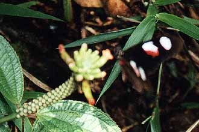

Heliconius
butterflies visiting a
Psiguria
vine
My friend Peter Wilson sent me these photos of
Heliconius
visiting a
Psiguria
vine. Photographed in Ecuador: Morona-Santiago, Palora 1000m alt., 20 June 2000.

Heliconius erato notabilis
(Click on picture to see next photo).
Back to
Heliconius
information page
To J. Mallet home page
Last constructed:
19 July 2000